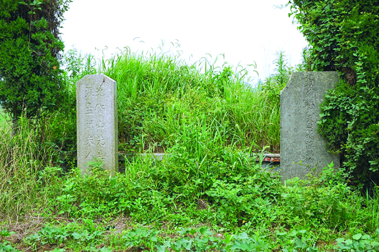

沈钧儒家族墓
嘉兴市文物保护网 · 市级文物保护单位 · 2014-06-16 · 原文

沈钧儒家族墓位于嘉兴市南湖区余新镇长秦村8组，东临陆泾港，南200米处为沪杭高铁，坐西朝东，总占地面积2500平方米，是沈钧儒夫妇、沈钧儒父沈澡卿和其他家族人员的坟茔。沈钧儒墓碑上刻有“张梦婵夫人沈衡山先生之墓”、“民国丙子年二月立”。现墓碑由当地政府仿原物制作，原碑于1998年6月移置于沈钧儒纪念馆内。1963年沈钧儒逝世后，其骨灰埋葬在北京八宝山公墓内，此墓仅葬有其妻张梦婵。沈钧儒夫妇墓北面为其父亲沈澡卿之墓，墓碑上刻有“清故朝议大夫秀水沈澡卿公之墓”。沈钧儒（1875～1963），字秉甫，号衡山，原籍嘉兴，清光绪时进士，中国法学家，政治活动家，曾任民盟中央主席，历任中华人民共和国政府委员、中央人民政府副主席、最高人民法院院长等职。沈钧儒是民主人士左派的旗帜，爱国知识分子的光辉榜样，在中国革命史上有很高的地位，其家族墓有很高的历史价值。2009年公布为嘉兴市级文物保护单位。